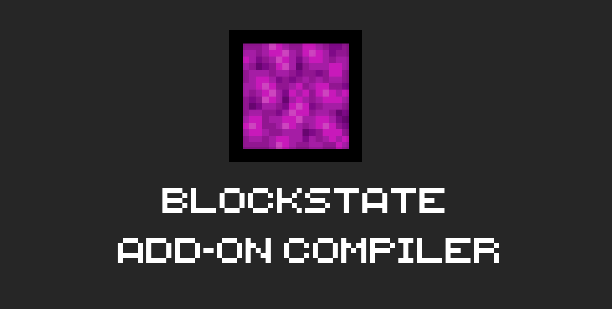
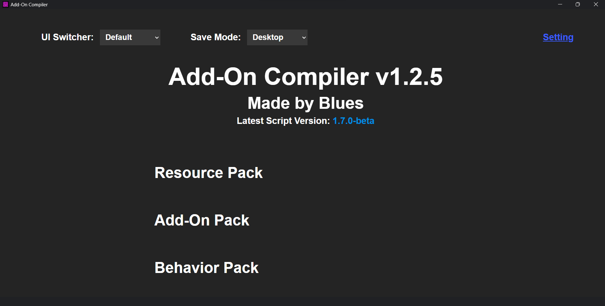
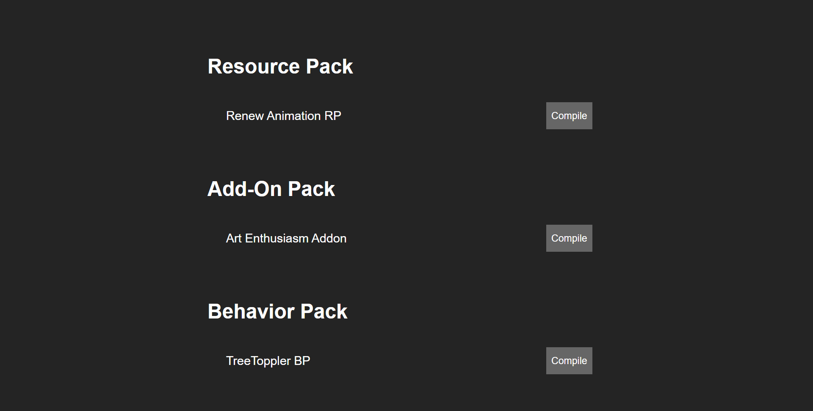
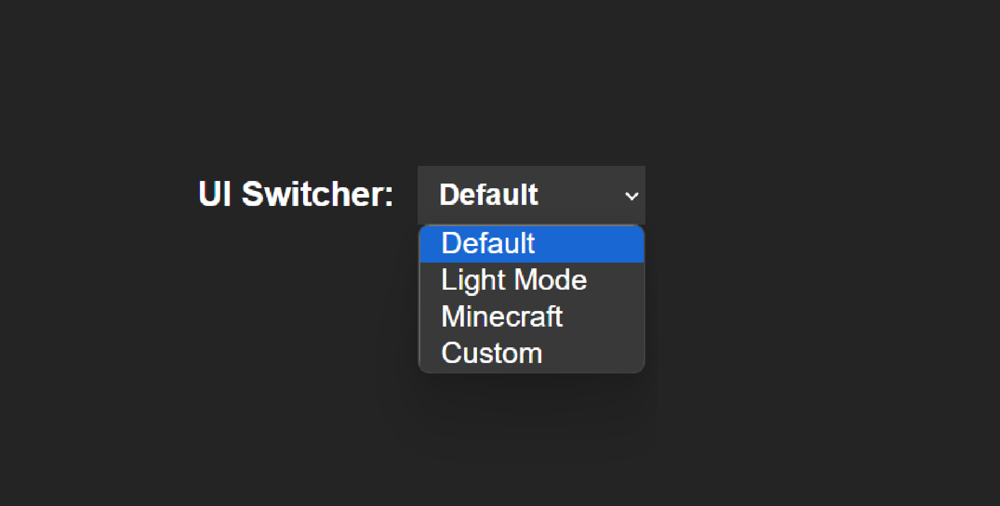
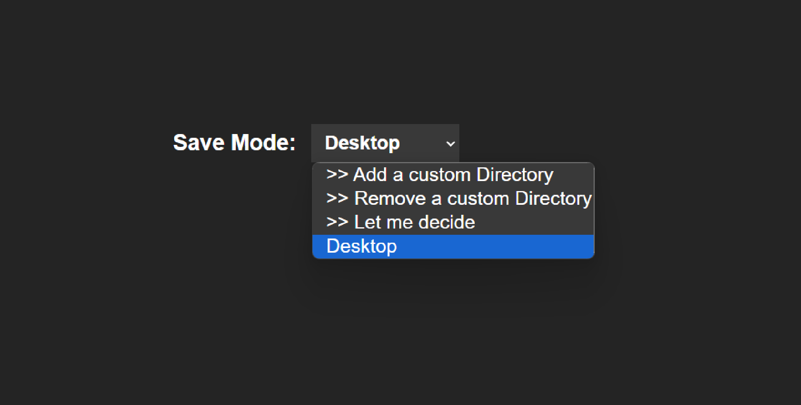
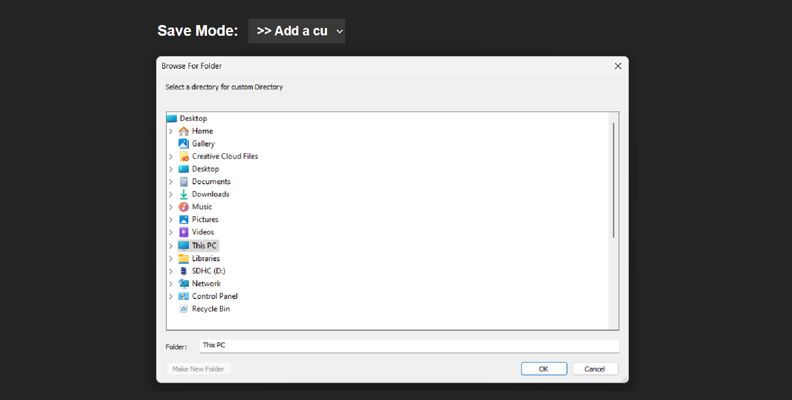
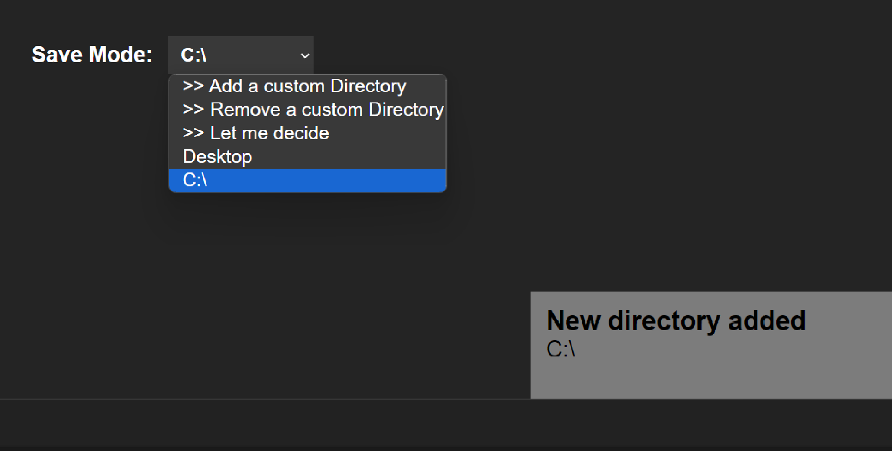
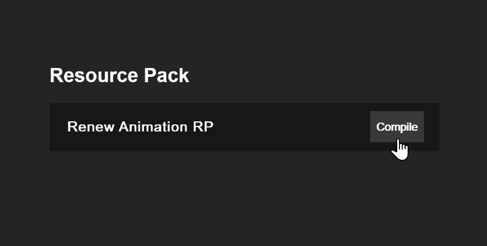
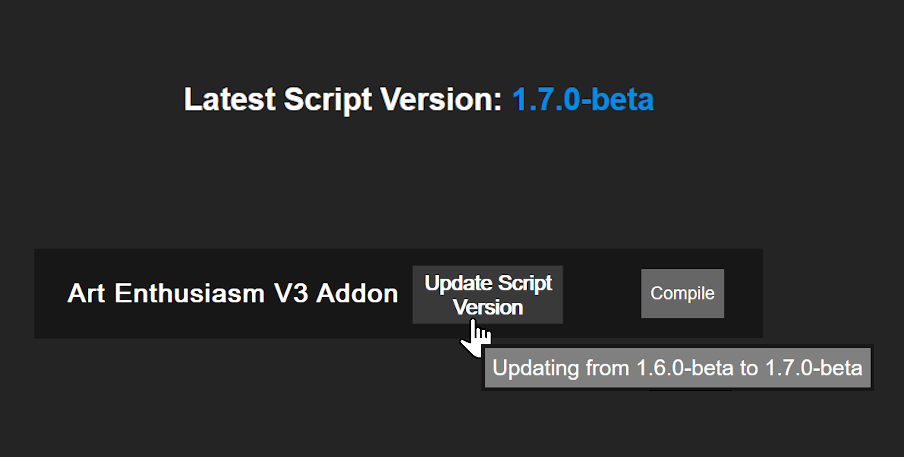

Are you fed up with the manual process of gathering RP and BP files from separate folders, zipping them, and constantly changing their extensions whenever you want to share your Add-On?
Well, we have the solution for you! Introducing the Add-On Compiler! This tool will automatically gather all the necessary files and compile them into a single .mcaddon file for you!

Well, we have the solution for you! Introducing the Add-On Compiler! This tool will automatically gather all the necessary files and compile them into a single .mcaddon file for you!
Let's dive into how this compiler works! And what features it offers!

Here's the compiler User Interface! It's pretty simple, right? And yes Dark-mode is the default mode! Let's go over the features!

When launched, the compiler will automatically detect development_resource_packs and development_behavior_packs folders om your computer and will use that to sort your projects into 3 categrories: Resource Pack, Add-On and Behavior Pack.
Simply put it will scan and try to match RP and BP that share the same name and will put them into the Add-On category. If it can't find a match, it will put them into the Resource Pack or Behavior Pack category.
Note that, they must share the same name (You can use RP or BP at the end of their name) to be considered a pair! For example: "My project"/"My project RP" and "My project"/"My project BP" will be consider as an Add-On,

Simply put it will scan and try to match RP and BP that share the same name and will put them into the Add-On category. If it can't find a match, it will put them into the Resource Pack or Behavior Pack category.
Note that, they must share the same name (You can use RP or BP at the end of their name) to be considered a pair! For example: "My project"/"My project RP" and "My project"/"My project BP" will be consider as an Add-On,
You can also use the UI switcher to change to your favorite theme! (Dark mode is the default theme)

Save Mode allows you to alter the directory that the compiler will save the compiled Add-On to!

You can also add/remove custom directory to the compiler! This will allow you to compile Add-Ons from anywhere on your computer!

You should see a notification at your bottom-right screen when a new directory is added The notification will disappear after a short period of time

Now you're all set! Simply click on the "Compile" button and the compiler will do all the manual work for you! Including zipping the files and changing their extensions to .mcaddon!

For all the ScriptAPI enthusiasts out there, you can also use the compiler to update your ScriptAPI projects! The compiler will check for the latest version of ScriptAPI and will promt you to update
IMPORTANT: This feature is still in development and may not work properly!
IMPORTANT: This feature is still in development and may not work properly!